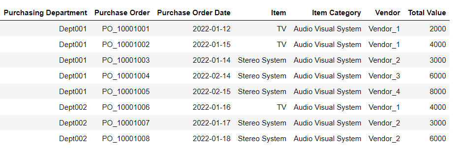
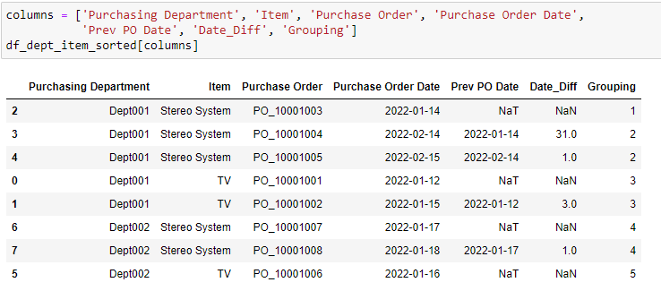
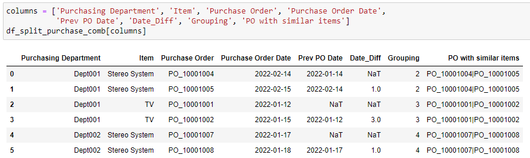

Procure-to-Pay Process Analytics - Split Purchase Order red flag detection using Python
Introduction
Brief Overview of Procure to Pay Process
The procure to pay process is a commonly used term to describe the fulfillment of goods and/or services to a given requirement. It usually starts with having a purchase requsition or purchase request. This will be followed with a purchase order (PO) to be sent to the respective vendors for fulfilling the order. When the vendor/supplier provides the goods and/or service they would bill with an invoice and the purchasing organization will verify the receipt of the goods or services. At this stage there is usually a three way matching process to ensure the purchase order, goods receipt and invoice are aligned. The final step will be the actual payment of the goods and services.
Issues with Split Purchase Order
Splitting of purchase orders can be considered non-compliant when it is done with the intention of circumventing the organization’s internal controls or policies, or to avoid the approval process required for purchases over a certain threshold.
For example, if an organization has a policy that requires purchases over a certain amount to be approved by a specific person or department, splitting a large purchase order into multiple smaller ones to avoid the approval process can be considered non-compliant. Similarly, if splitting a purchase order results in higher costs or unnecessary duplication of effort, it can be seen as a violation of procurement regulations or internal controls.
In this article, I would like to explore some useful functions in python which could help in identifying splitting of purchase orders.
Related dataset and notebook can be found in the following github link https://github.com/ZS-Weng/Data_Engineering/tree/main/Splitting_of_Purchase
Logic to identify Splitting of PO
In this article, I will use a simplified dataset with 8 rows of transactions, each representing a different Purchase Order. These purchase orders belong to two departments acorss four venodrs.

First, we would order the data by purchasing department, item and the purchase order date. From there we will identify the instances where the Purchasing Department is buying the same item across different purchase orders. This is used to generate the initial pre-grouping for later processing.
item_field = "Item"
df_dept_item_sorted = df_raw.sort_values(
["Purchasing Department", item_field, "Purchase Order Date"]
)
df_dept_item_sorted["Prev PR Date"] = df_dept_item_sorted[
"Purchase Order Date"
].shift()
df_dept_item_sorted["PreGroup"] = (
df_dept_item_sorted[
["Purchasing Department", item_field, "Purchase Order Date"]
]
.groupby(["Purchasing Department", item_field])
.cumcount()
)Next, we use the initial pre-group to identify the start of each department and item buying category. In addition, we calculate the number of days between the current purchase and previous purchase and whether the duration is within a certain threshold for it to be considered non-compliant.
mask = df_dept_item_sorted["PreGroup"] == 0
df_dept_item_sorted.loc[mask, "Prev PR Date"] = pd.NaT
# Calculating number of days difference between adjacent records
df_dept_item_sorted["Date_Diff"] = (
df_dept_item_sorted["Purchase Order Date"]
- df_dept_item_sorted["Prev PR Date"]
).dt.days
# Set Threshold
n = 5
df_dept_item_sorted["Flag Out of Range"] = (
1 - (df_dept_item_sorted["Date_Diff"] <= n)
).astype(int)
df_dept_item_sorted["Grouping"] = df_dept_item_sorted["Flag Out of Range"].cumsum()We get the initial grouping details:

After the initial grouping, we can group the data based on Grouping perform the counts of Purchase Orders and filter out the applicable groups.
df_pr_count = (
df_dept_item_sorted[["Grouping", item_field, "Purchase Order"]]
.groupby(["Grouping", item_field])
.nunique()
.reset_index()
)
df_pr_count.columns = ["Grouping", item_field, "Count PR"]
# Identifies the groups that are valid split purchase cases
df_split_purchase_group = df_pr_count[df_pr_count["Count PR"] >= 2]
# Joining of Split Purchase Groups to initial details
df_split_purchase_details = df_split_purchase_group.merge(
df_dept_item_sorted, how="inner", on=["Grouping", item_field]
)From the details we perform furhter processing to identify the details of the group and which Purchase Orders are in each of the group.
df_split_purchase_details["Date_Diff"] = np.where(
df_split_purchase_details["Flag Out of Range"] == 1,
pd.NaT,
df_split_purchase_details["Date_Diff"],
)
df_split_purchase_details.sort_values(
["Grouping", "Purchase Order"], inplace=True
)
df_split_purchase_desc = (
df_split_purchase_details.groupby(["Grouping", item_field])
.agg({"Purchase Order": "|".join})
.reset_index()
)
df_split_purchase_desc.columns = ["Grouping", item_field, "PR with similar items"]
df_split_purchase_comb = df_split_purchase_details.merge(
df_split_purchase_desc, how="inner", on=["Grouping", item_field]
)
Additional Logic
After the initial grouping for the splitting of purchase is identified, additional business logic can be applied to validate whether the splitting of purchase is at risk of being non-compliant. Some of the common business rules include:
- Does the split cause a different threshold value resulting in a different approval compared to if the amount is in a consolidated PO ?
- Are the POs going to the same vendor or different vendors ?
- Is there a more stringent days threshold to separate between high risk and lower risk split ?
An example code below checks for the following:
- Was the threshold of 5,000 avoided due to the split ?
- Are the splits belonging to the same vendor ?
- Are the dates diff within two days ?
df_priority_score = (
df_split_purchase_comb.groupby(["Grouping"])
.agg(
{
"Total Value": ["min", "sum"],
"Date_Diff": "min",
"Vendor": ["nunique", "count"],
}
)
.reset_index()
)
df_priority_score.columns = [
"Grouping",
"Min_Value",
"Max_Value",
"Min_Date_Diff",
"Unique_Vendor",
"Count_Vendor",
]
value_threshold = 5_000
df_priority_score["Flag_Threshold_Crossed"] = (
(df_priority_score["Min_Value"] < value_threshold)
& (df_priority_score["Max_Value"] >= value_threshold)
).astype(int)
df_priority_score["Flag_Same_Vendor"] = (
(df_priority_score["Unique_Vendor"] < df_priority_score["Count_Vendor"])
).astype(int)
days_threshold = 2
df_priority_score["Flag_Min_Days"] = (
df_priority_score["Min_Date_Diff"] <= days_threshold
).astype(int)
df_priority_score["Score"] = (
df_priority_score["Flag_Threshold_Crossed"]
+ df_priority_score["Flag_Same_Vendor"]
+ df_priority_score["Flag_Min_Days"]
)Conclusion
In this article we have explored on how splitting of purchase orders might be non compliant and python functions that can help identify such non compliant split purchase orders.
Thanks for reading and hope this was useful in some way!